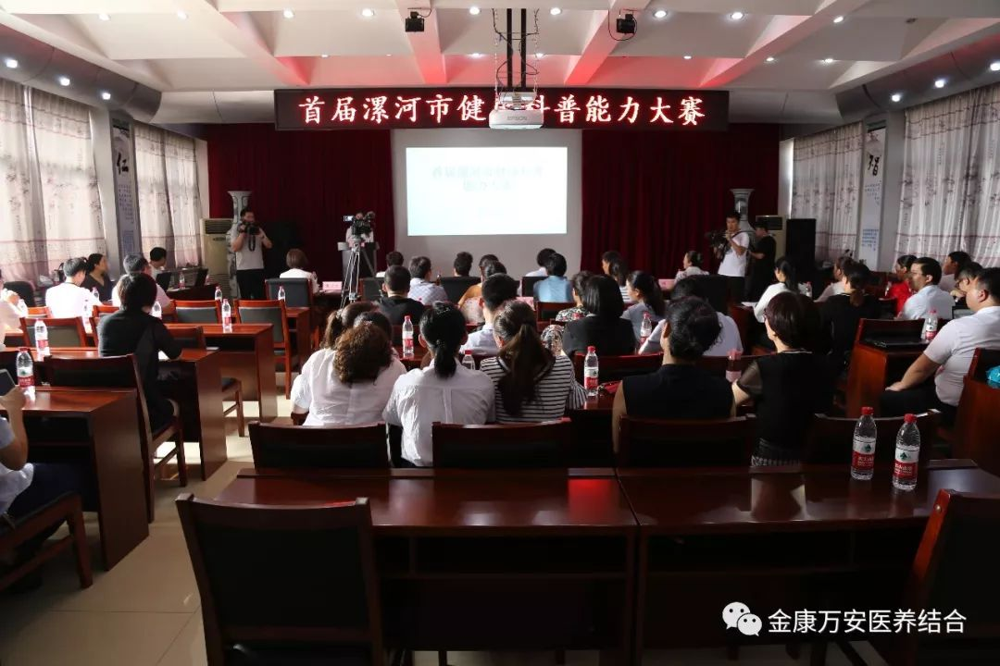
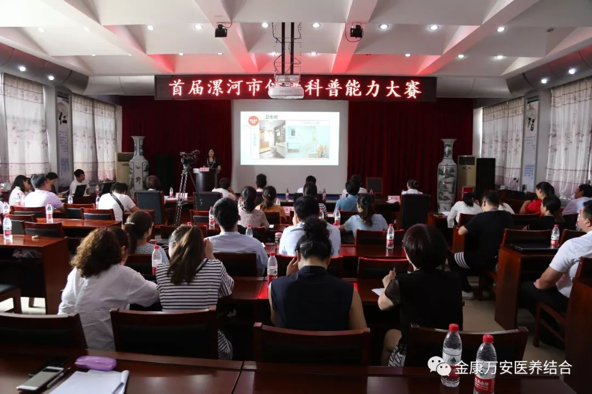
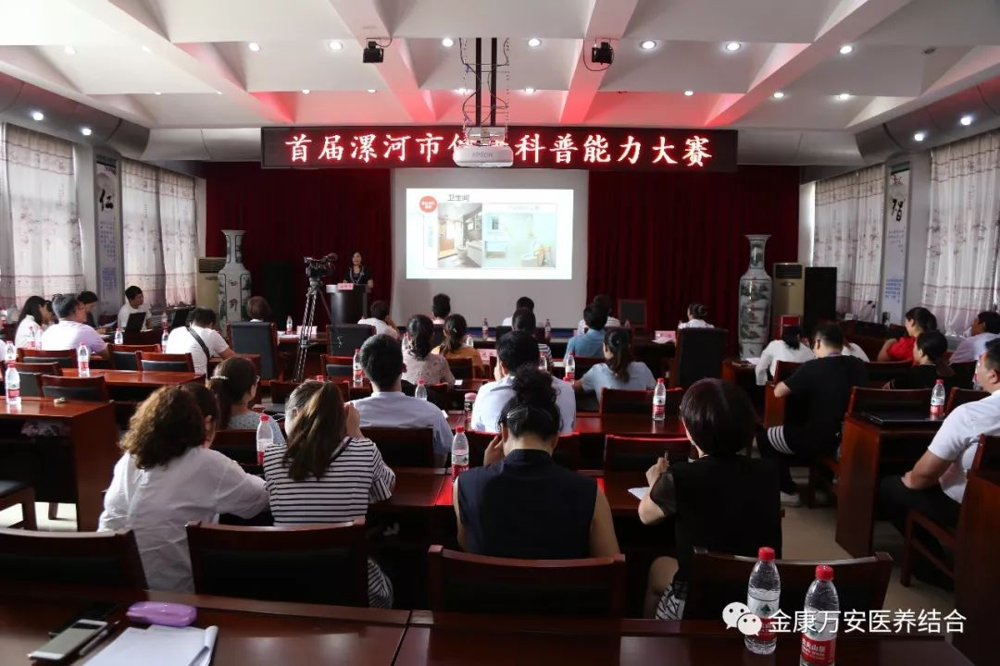
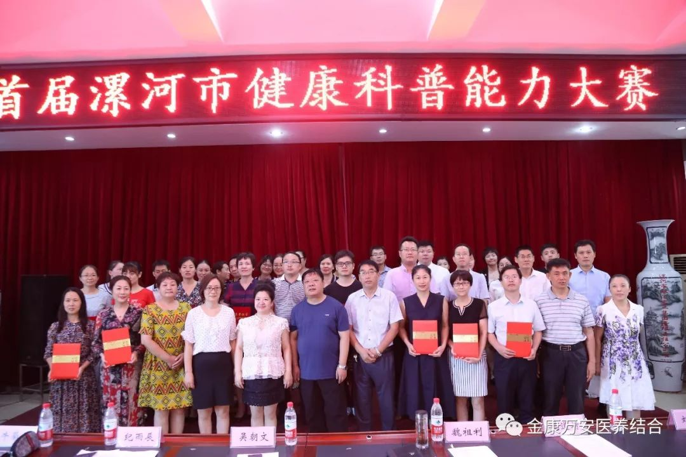
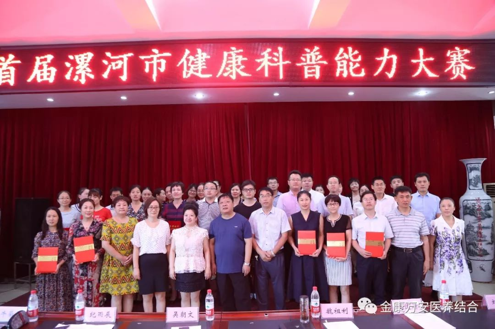

热烈祝贺万安康复医院在市卫计委举办的“首届漯河市健康科普能力大赛”中获得三等奖
人气: "" 时间：2018-07-24
为进一步向社会公众传播正确、科学的防病治病理念，普及健康知识，弘扬科学精神，促进健康科普惠及民生，提升全市医务人员科普能力，为健康漯河建设奠定科普人才队伍，更好地满足公众健康需求，营造健康知识传播氛围。7月23日，在市疾控中心六楼会议室举办了由市卫计委、市疾控中心、市健康教育所联合举办的“首届漯河市健康科普能力大赛”。



 

本次健康科普能力大赛共有31名来自各大医院的医务工作者参加。比赛以“传播医学知识、助力健康科普”为主题，用演讲的形式进行，比赛选手都是医院各科室主治医生及一线工作者，有着丰富的医学知识和临床经验，他们本着自己的专业特长，精心准备演讲稿，通过图文并茂的解说、通俗易懂的语言让现场观众对专业的医学健康知识有了进一步的认识和了解，演讲也充分展示了医务工作者丰富的医学知识和多才多艺的个人风采。
 

经过一天的激烈角逐，万安康复医院业务院长银令令演讲的《用爱守护生命最后的尊严》获得个人三等奖。